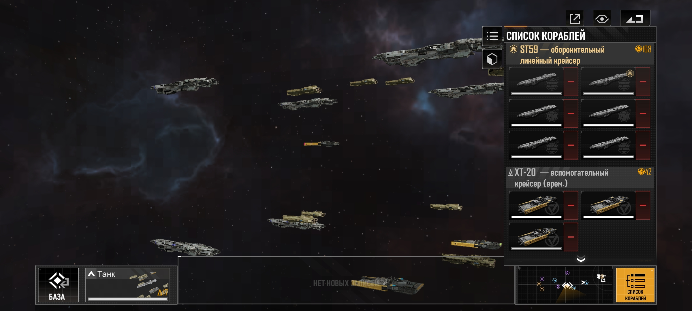
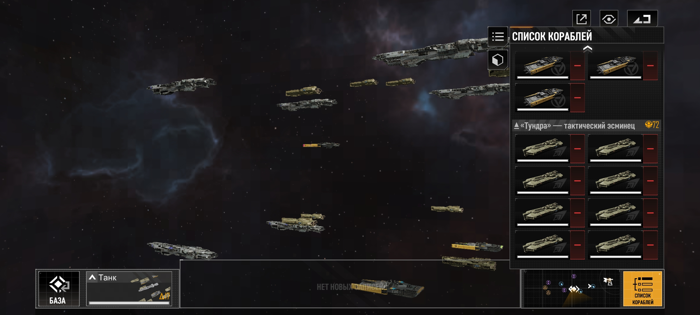
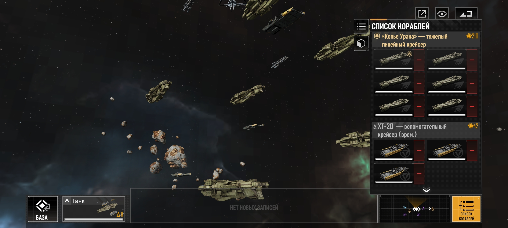
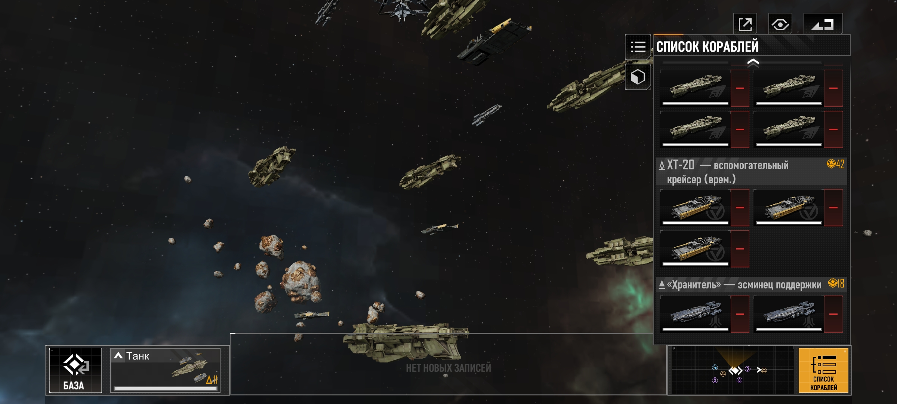

Рекомендуемый состав флота. Проверен на пиратах. Танкующие корабли: ST59 (Доступен в исследованиях/схема финансирования "рассвет" (на 50 уровне), так же можно купить за реал), Shield of Plutus (Щит Плутуса), Spear of Uranus (Копьё Урана) (Танкующие корабли должны быть прокачаны на защиту). В качестве ремонтных кораблей: XT-20 (можно купить в городах или на станции после постройки торгового центра космической станции, доступен с 3 уровня), Tundra (Тундра) (купить за реал), Keeper (Хранитель) (выпадает из ящиков в исследованиях).




Остальной флот я делю на космолёты и DD
Буду благодарен за коментарии, поддержку и дополнения к сайту по ссылке ниже: